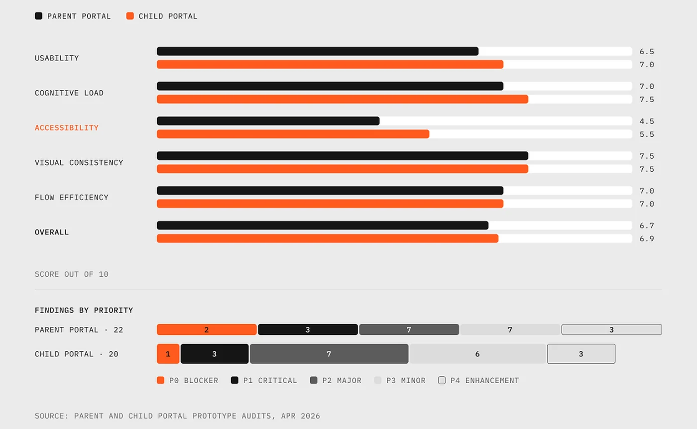
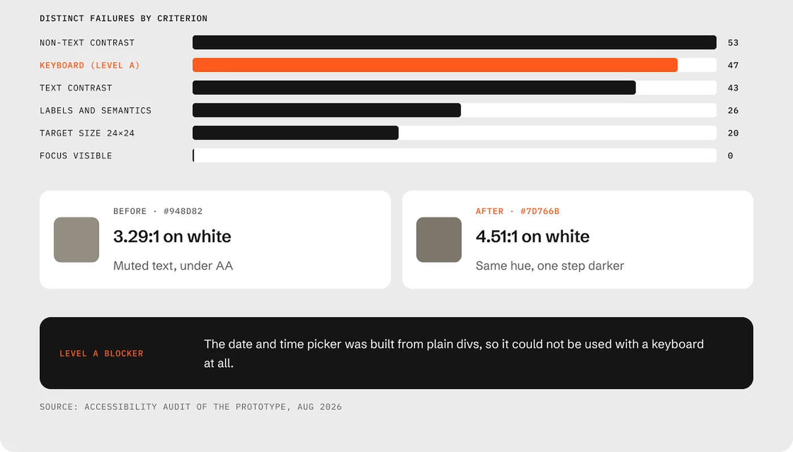

01 / HOW I WORK
From an unclear brief to a product teams can build.
Five stages run under every project I take on.
- 10 years in design, across agencies and product teams
- 8 in-depth projects, from brief to handoff
-
5
markets
- fintech
- edtech
- cybersecurity
- engineering software
- utilities
- 13shorter projects and explorations
The five stages
Every project runs on the same five stages.
Each stage answers one question before the next one starts.
Follow the link under each stage to see it in a real project.
-
STAGE 01
Discover
What does success look like, and for whom?
Workshops with the business and the people who build it.
See it applied in Simulation in the browser

Three workshop questions, each answered by a part of the product. -
STAGE 02
Audit & research
Where does it break today, and what proves it?
A scored UX audit, a benchmark or interviews.
See it applied in Financial education platform

Two prototype audits on the same dimensions: 42 findings. -
STAGE 03
Structure
What goes where, and how do people move?
Sitemap, flows and wireframes at every breakpoint.
See it applied in Network security console

Five public sections and one private area. -
STAGE 04
Design & system
What does it look like in every state?
Brand screens assembled from tokens and components.
See it applied in Financial education platform

The offers step, built from the brand design system. -
STAGE 05
Ship
Is it built as designed, and can everyone use it?
Handoff with every state documented.
See it applied in Network security console

A WCAG audit of the branded prototype.


Ship feeds
the next Discover.
What a release shows about real use becomes the first question of the next iteration.
AI in the toolkit
Faster to something real. Not a shortcut on thinking.
-
Live prototypes, not static ones
Flows get built early as working prototypes that run locally, so they can be clicked through, put in front of users and A/B tested, instead of maintaining one huge Figma prototype.
-
A memory for recurring work
Checklists, audit criteria and handoff notes live as reusable AI workflows, so the details carry from one project to the next.
-
The right tool for each step
Research synthesis, copy variants, visuals and short videos each get the tool that fits the job.
-
Decisions stay human
AI speeds up the making. The reasoning, the trade-offs and the final call stay with the designer.
Toolkit
- Claude
- Antigravity
- Figma Make
- ChatGPT
- Gemini
Principles
Four rules I hold myself to on every project.
-
01
Start from evidence, not from screens.
Every project starts from what an audit, a workshop or the data showed.
-
02
Design the system, then the pages.
Templates and components first.
-
03
Design every state, not only the happy path.
Empty, loading, partial and error states are part of the brief.
-
04
Write decisions down, with what I rejected.
Each key decision records the option I turned down and the trade-off.
Anatomy of a decision
How I document a decision.
Four fields, always in the same order.
- 01 / PROBLEM Two listings switched to touch filters at different breakpoints.
- 02 / DECISION Inline filters on desktop, a bottom sheet below 1024 px.
- 03 / REJECTED Inline filters from 640 px up, cramped on tablets.
- 04 / TRADE-OFF Tablets lose inline filters but get one touch-first pattern.
See the full card in Financial education platform, decision 03
- 01 / PROBLEM Teams work in dark operation centres, while reports get shared in daylight.
- 02 / DECISION One component library with dark and light themes covered both.
- 03 / REJECTED A dark-only interface.
- 04 / TRADE-OFF Every component maintained in two themes.
- 01 / PROBLEM Simulations run for minutes or hours.
- 02 / DECISION Design for waiting and failing
- 03 / REJECTED Generic toasts for every situation.
- 04 / TRADE-OFF A bigger state catalogue to maintain.
- 01 / PROBLEM Progress and accuracy were mixed.
- 02 / DECISION Mastery and score are different numbers
- 03 / REJECTED One blended percentage, simpler but misleading for parents.
- 04 / TRADE-OFF Two metrics to explain, handled with short tooltips.